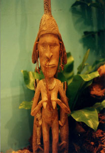

第７３ ウエワク捕虜作業隊（その２）
|
（一） ウエワクの日本軍捕虜収容所
|
|
|
猛軍司令部は昭和２０年９月×日、４５０名からなる浅田作業隊を編成し、ムッシュ島から、敵の
軍船に乗船させ、ウエワクに出発させました。私共はウエワク港に到着し、陸路を歩いて、敵の指定し
た場所につきました。その指定場所に着いたら、椰子の木で作った囲いの中に入れられ、回りは鉄条網
が厳重に張り巡らされてあり、鉄条網には電流も流れていると聞かされました。囲いに使われている柱
の直径は約３０センチメートル、長さ約５メートルの椰子の木でした。その柱には、８段に有棘鉄線が
張り巡らされ厳重な囲いでした。私共捕虜作業隊は鉄条網で囲んだ柵の中に収容されました。まるで檻
の中に入れられた猛獣のように感じました。これが捕虜と言うものか！と、つくづく実感しました。畜
生！と心の中で叫び、悔しい思いでした。
それでも、今夜、夜露を防ぐためにも早速、天幕を張らねばなりません。当番兵と２人の共同作業で
ねぐらを先ず作りました。皆で炊事場を作ったり、便所を作ったり、命令を受領したりして、暗くなら
ないうちに一応の生活環境は出来上がりました。命令により、作業隊の組織及び指揮命令系統は、今ま
で通りとされました。私共は地面に直に寝るので、雨が降って来たら、地面が何処からともなく湿って
来て誠に気持ちが悪い思いをしました。勿論、雨水を防ぐための溝も造りましたが完全ではありません
でした。
鉄条網で囲んだ収容所の四隅には、一段と高く聳える望楼が作られていました。その望楼には常時２
名の歩哨がいて、実弾をこめた機関銃の銃口が、２４時間絶え間なく日本兵を監視していました。夜に
なると、この望楼からサーチライトで、我らの幕舎を隅から隅まで照らし、監視は厳重そのものでした。
この望楼の監視兵の外に、二人一組の歩哨が２時間ごとに柵の外側を巡回し警戒していました。誠に厳
しい監視体制でありました。
捕虜作業隊の屯所の入り口には、両側に英国兵の歩哨が二名一組となって立哨していました。ある日
の事、朝の衛兵交代で、１人の衛兵が動作を間違えました。これを素早く見て取った日本兵が、大声を
立ててワーッと笑った。すると、笑い声を聞き咎めた英軍の独りの将校がつかつかと私共の所にやって
来た。
『しまった！やられるぞ！』と、観念しました。ところが意外でした。くだんの将校は
『この歩哨は応召で来た兵士だから、十分な訓練を受けていない。君達日本兵のようには訓練され
ていない。日本兵とは違うんだ』と、弁解しました。只それだけで終り、ホッと安心しました。一方、
こんな軍隊と戦争して負けたのか？と考えたら、残念でなりませんでした。一方、この英国軍人はナン
ト心の広いご仁だろうと感服しました。
敵の歩哨は勤務中でも平気で煙草を吸います。衛兵に立哨中でも煙草を吸うので、翌朝の衛兵交代時
には、歩哨の足元に沢山のタバコの吸い殻が散らかっていました。日本兵の中に、素早くこのモクを拾
うしたたかな兵がいて、生活力の旺盛な日本兵に驚かされました。
日曜日になると、鉄条網で囲まれた日本軍収容所の外側に、豪州兵が沢山集まって来ます。彼等
は日本兵と物物交換するのが目的です。例えば、日の丸の旗。階級章。浮世絵。千人針。日本製時計。
等珍しい物を日本兵は沢山持っています。それらの品物を敵さんは欲しがるのであります。
中でも一番人気の高かったものは浮世絵で、ナント煙草２０箱とチェンジされました。その様子
を、固唾を飲んで、見守っていた日本兵の間から、すかさず
『うおーっ』と、いう溜め息と羨望の声が沸き上がりました。柵の外側では今チェンジしたばかり
の浮世絵を嬉しそうに見ている豪州兵の顔が、これまた、ナントも言い様のない表情で、その情景が暫
く印象に残りました。
物物交換はしないが、私共の所にやってきて、世間話をして楽しむ者もいました。中でも、ウイスキ
ーが飲めるから軍隊に入ったんだという者もいて、私共を喜ばせてくれる愉快な敵兵もいました。
時計を２個も３個も持っている敵兵に、そんなに沢山、時計を持っていてどうするんだ？と、尋ねて
みました。すると、敵さんはドライではっきりしていて、時計は看護婦にプレゼントするのだと言う。
とにかく、戦争が済むと敵も味方も、一人の人間に戻ることを深刻に理解しました。
|
|
（二） 堂々と軍門に下る日本兵を見た
|
|
|

戦場では想像を越えた珍しい事がよく起きました。ウエワク作業隊軍通班が収容所で生活を始めて
から、１０日ほどしたある日のこと、鉄条網の柵の外をぼんやり眺めていたら、身の丈１６５センチ
位の一人の逞しい大日本帝国の陸軍上等兵が、立派な戦闘帽をかぶり、両足にはこれまた、立派な巻
脚半ゲートルを
巻き、立派な軍靴をはき、凛々しい軍装を整え、肩には三八式歩兵銃を担い、颯爽とした格好で、日
本軍収容所の入り口に、立哨している英軍の衛兵の所に、堂々と降伏して来ました。この時の私共の
服装は、乞食みたいな汚い服装でしたから、よくもあんな立派な服装をしているものだと不思議で、
驚きの目で眺めていました。彼はキット、原住民に、『ジャパン ソルジャーが沢山いるよ』と聞き、
彼は安心して、仲間に入れて貰えると思ってやって来たのかもしれない。
私共は誇り高いＳ、Ｗであって、終戦前のＰ、Ｗではない。この様子を眺めていた作業隊の厳しい視線が
『この野郎！今頃になって、のこのこ出てきて、我々の居る収容所に投降してくる。誠にけしからん』
と、柵の中から彼に一斉に厳しい目が降り注いだ。この上等兵のその後の消息は解りません。
英軍は終戦後命令により捕虜になったものをＳ、Ｗと呼び、戦争中に捕虜になったものをＰ、Ｗと
言って区別していました。日本にはその様な区別はないように思います。同じ捕虜にも色々ある事を
知りました。
|
|
（三） ウエワク捕虜作業隊の概要
|
|
|
１
|
作業隊の編成
作業隊長 航空兵 浅田大佐
各部隊の作業隊長を班長と呼称していました。
各部隊の作業班長 歩兵 ××大尉
軍通作業班長 電信兵山口大尉
通訳 １名 在米の日本人二世
以上４５０名
|
|
|
２
|
作業要領
各部隊ごとに作業内容が違っていました。
なお、同一部隊は同一作業に従事しました。但し時々変更に成ることもありました。
| 軍通作業班の作業内容 |
| ＊敵の貨物船からの揚陸作業 |
|
荷物を貨物船から「はしけ」に積み替え、海岸まで運び（船の操舵は敵兵がする）そこに待機し
ている貨物自動車に、また積み替える。この作業が主でした。
|
| ＊道路構築作業 |
| ＊その他 |
|
|
|
３
|
勤務体制
労働時間は八時間。睡眠時間は八時間。食事その他の時間は八時間
三交代勤務。
・零時から八時まで勤務 八時間 一交
・ 八時から十六時まで勤務 八時間 二交
・十六時から零時まで勤務 八時間 三交
但し将校は労働に服役しなくてもよい。敵の指揮官と日本軍との情報連絡を担当。
|
|
|
４
|
食 事
１日に３回。朝、昼、晩、の３回
燃料は固形燃料を敵から支給されました。固形燃料で飯盒炊事をしました。
|
|
|
５
|
医療関係
衛生兵、軍医さんは居ない、医療関係者は一切居なかった。
|
|
|
６
|
その他
三ケ月の服役期間中に、一回だけ日本兵主催の慰安会がありました。日本兵の仲間には色々
の芸人が大勢いまして賑やかでありました。敵さんも物珍しそうに見物し、楽しそうでしたが、分
かるのかなあ？と思いました。恐らく、見ているとゼスチュアーで分かるのであろうと推量しました。
米国生まれの日本人二世の通訳が、人肉問題で作業隊長の浅田大佐を脅迫しているという噂
を耳にした事もありましたが、内容は分かりませんでした。とにかく、戦争に負けると、悪いこと
のみが表面に出て来て、日本人でありながら惨めだと思いました。
|
|
|
７
|
ムッシュ島に帰還
任務を無事に終え、昭和２０年１２月×日、浅田大佐指揮の作業隊４５０名は、第十八軍司
令官安達二十三中将閣下外軍首脳の出迎えを受け、ムッシュ島に無事帰還し、やれやれと安堵の胸を
なで下ろしました。出迎えに来て頂いた将軍達から夫々の労いの言葉を貰いました。真野五郎第四十
一師団長閣下は
『諸君はウエワクで作業したが、食料には苦労しなかった。ムッシュ島に居る者は食料が少ない。
そのつもりで原隊に戻れ』と訓示されました。
……何を言ってるんだ！我らは敵の目を盗んで、必死になって敵の食料を盗んで食べていたので、
敵から食料を沢山支給された訳ではない！これが師団長の労いの言葉かと腹がたちました。……
次に安達軍司令官閣下の言葉はさすがに立派でありました。
『諸君は、ウエワクで精神的迫害を受けながら、良く任務を達成した。誠にご苦労であった』
という労いの言葉がありました。この労いの言葉を聞いたら、ウエワク捕虜作業中の肉体的苦労も精
神的迫害を受けたことも、何処かに飛んでいき、満足感を覚えました。
|